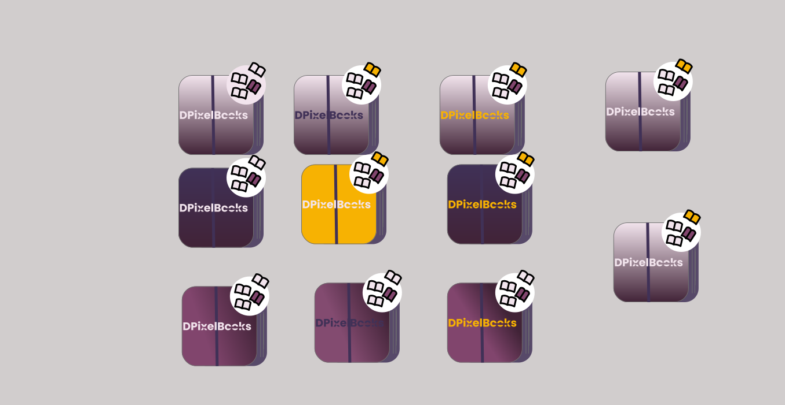

Welcome to the Logo Design Style Guide! This page showcases an array of logo designs, each meticulously crafted to embody unique colour styles that reflect the brand's essence. Explore the diverse range of designs that could adorn the website, ensuring an impactful branding experience for the audience.
 Back to About Page